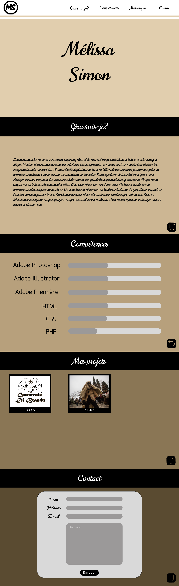
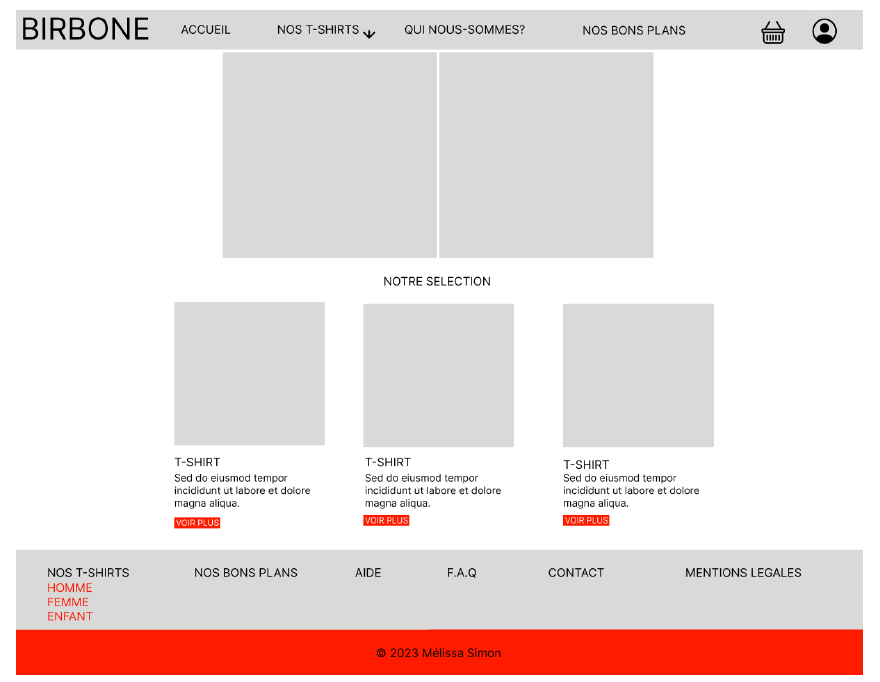

Pour la SAE 105, on doit développer un site statique avec HTML et CSS dans un design minimaliste qui doit présenter notre profil, c’est-à-dire notre portefolio. S. Il devra être conforme au W3C et utiliser des balises de l’HTML5. Et il doit être déployé en ligne. En tant qu’étudiant, on doit mener un travail de conception, d’intégration et de développement des vues d’un site Web en respectant les critères donnaient par l’enseignent.
MAQUETTE
Pour la conception de la maquette visuelle, j’ai décidé d'utiliser le logiciel Figma.
En premier temps, j'ai établi ma typographie en choisissant la police et les couleurs de ma maquette
Un dégradé de couleur beige tirant vers le marron. J’ai fait ce choix pour avoir un effet neutre et
simple sous l’œil de l’utilisateur. Ensuite j'ai effectué des recherches de d'exemples de police et j'ai fini par choisir la police Norican
qui donne une certaine douceur à la maquette, une légèreté derrière les couleurs que j'ai choisies.
Pour commencer, j'ai d'abord créé l'accueil de mon site web, j'ai créé d'abord le header en blanc en
mettant 4 sections, qui suis-je, les compétences, mes projets contact écrient avec la police Norican.
Pour délimiter le header et le reste de la page, j'ai ajouté une barre de la même couleur de la page
c'est à dire le beige le plus clair, cela donne aussi un côté soigné. J’ai Ensuite ajouter en haut à
gauche mon logo qui est composé d'un cercle noir avec à l'intérieur mes initiales (MS) écrient avec la
police Mogra. Pour finir la page d'accueil, j'ai mis au centre de la page mon prénom est mon nom
toujours avec la police Norican, pour montrer à l'utilisateur à qui et de quel sujet va parler ce site
web : de moi, de mes compétences et de mes projets. Après je suis passée à la création de la page « Qui-suis-je ? », pour présenter la page j'ai mis une
bannière de couleur noire où j'ai écrit le nom qui suis-je de couleur blanc avec la police Norican, j'ai
mis la page entière d d'une couleur beige un peu plus foncée que la page d'accueil, au centre j'ai mis
du texte qui me décrit de couleur noire avec toujours la même police non c'est réel. En bas à droite
de la page nous pouvons trouver un bouton qui permet lorsqu'on clique dessus de retourner à la
page d'accueil. Ensuite, et j'ai créé une nouvelle page en dessous des 2 autres pages qui hé correspond à la page
compétence. hé j'ai repris le même format que la page qui suis-je en changeant le titre hé en
changeant l'art couleur d'arrière-plan en un brin beaucoup plus foncé. J'ai remplacé le texte de qui
suis-je par plusieurs barres blanches qui montre la jauge en gris de mes compétences pour Adobe
Photoshop, Adobe illustrator, Adobe première, HTML, CCS ET PHP. Par la suite, j'ai refait le même schéma en créant une nouvelle page pour la section mes projets, j'ai
échangé l'arrière-plan hé avec mon couleur qui c'est quoi tire le plus vers le marron. J'ai mis des
cases noires où j'ai inséré des images de plusieurs de mes projets et des textes juste en bas qui
correspondent à un élément de mes projets : « Logo » et « Photos ». Pour finir, toujours avec le même style de page,on utilisant une couleur d'arrière-plan plus foncé que
la précédente, j'ai créé la page contact en créant un formulaire gris pastel et gris foncé, on peut
remplir son nom son prénom son email et détaillé ce que l'on veut me dire avec un bouton noir
« envoyer ». Toutes ces pages sont les uns en dessous des autres, on peut scroller pour les atteindre. Mais pour
atteindre une particulièrement sans scroller on peut cliquer sur les différentes sections qui nous
amène à la page qu'on veut, pour retourner à la page d'accueil on clique sur les boutons noirs en bas
à droite sur les différentes pages. J’ai positionné chaque boutons ou lien cliquable en fonction de
l’accessibilité de l’utilisateur, cela lui permet une facilité d’accès.

SITE WEB
L’hébergeur utilisait pour mon site web est github.com. GitHub est un service web d'hébergement et de
gestion de développement de logiciels, utilisant le logiciel de gestion de versions Git.
Pour héberger mon site sur GitHub, j’ai enregistré les différents ficher du codage que j’ai effectué sur
CodesAndBox, je les ais exporter sur GitHub
Cette SAE 105 avaient pour but de faire acquérir l’étudiant en MMI1 plusieurs compétences comme
la combinaison des ressources liées au développement et à l’intégration et comprendre comment
elles s’articulent pour automatiser la production de sites web, une sensibilisation à la nécessité de
respecter les normes et les bonnes pratiques de l’intégration web, de rendre les étudiants
autonomes sur leur poste de travail en maitrisant leur environnement de développement (édition,
validation, inspection du code et hébergement local des sites).
COMPÉTENCES ACQUISES
- Comprendre les écosystèmes, les besoins des utilisateurs et les dispositifs de communication numérique.
– Concevoir ou co-concevoir une réponse stratégique pertinente à une problématique complexe.
– Exprimer un message avec les médias numériques pour informer et communiquer.
– Développer pour le web et les médias numériques.
– Entreprendre dans le secteur du numérique.
NOTE : 13,03/20
Support de données
Concevoir un support de données pour le web et animés
Support de données
L'objet de ce SAÉ est de transformer des données brutes en informations significatives, de les visualiser de manière attrayante à l'aide d'une bibliothèque, de créer un site web pour présenter ces visualisations, et enfin, de produire des éléments de communication visuelle pour partager les résultats avec un public.
SUJET
La pauvreté, en tant que réalité sociale significative, affecte un nombre considérable de personnes en France. Ce sujet est d'une importance capitale pour approfondir notre compréhension des inégalités économiques et sociales au sein de la société française. En étudiant la pauvreté, nous avons l'opportunité d'explorer les implications profondes de cette réalité sur divers aspects de la vie quotidienne. Parmi ces aspects, on peut citer l'accès à l'éducation, à la santé, au logement, ainsi que les répercussions sur la cohésion sociale.
Pour une analyse plus approfondie, j'ai fait le choix de me concentrer sur des indicateurs spécifiques qui retracent l'évolution de la situation socio-économique en France au fil du temps. Ces indicateurs comprennent le taux de pauvreté entre 1970 et 2018, l'inflation en France de 1991 à 2022, ainsi que le taux de chômage en France de 2003 à 2023. Ces trois graphiques offrent une perspective temporelle, permettant d'identifier des tendances, des fluctuations et des corrélations potentielles dans le contexte socio-économique français.
Analyser le taux de pauvreté sur une période aussi étendue nous permet de discerner les fluctuations et les éventuelles causes sous-jacentes à ces variations. La compréhension de l'inflation sur une période de plus de deux décennies peut révéler des tendances économiques importantes qui influent directement sur le coût de la vie et, par extension, sur la pauvreté. De même, l'examen du taux de chômage sur une période récente offre des informations cruciales sur la stabilité de l'emploi et son impact sur la précarité financière des individus.
Enfin, afin d'inscrire la situation française dans un contexte plus large, j'ai décidé de comparer le niveau de pauvreté en France avec celui des autres pays membres de l'Union Européenne. Cette comparaison permettra d'identifier les spécificités françaises et de mettre en lumière les politiques ou les facteurs qui pourraient influencer la lutte contre la pauvreté de manière différente au sein de l'UE.
COMPOSITION DU SITE WEB
Mon site est constitué de 3 parties : la page d’accueil, en dessous le contenu principal où on retrouve les données et les graphiques visuels et le footer.
Pour le code, on retrouve une page html, une page css et un dossier image qui sont les différents graphiques faits sur Illustrator.Le site trouve une certaine responsivité sur l’apparence mobile
Pour mon site, je n’ai pas utilisé de JavaScript mais j’ai intégré deux animations pour l’effet visuel. Une première animation sur le titre de la page d’accueil où le texte change de couleur par vague et la deuxième qui fait apparaître tout texte de droite à gauche de l’écran dès qu’on rafraîchit la page.
En conclusion de cette SAE, j'ai démontré une compétence étendue dans le domaine de la manipulation de données et de la communication multimédia. J'ai utilisé des outils statistiques pour traiter les données, facilitant ainsi une analyse approfondie et une exploitation efficace. La définition d'une iconographie adaptée, composée d'illustrations, de photographies et de vidéos, a enrichi la communication en rendant les informations plus accessibles et attrayantes.
J'ai élaboré des animations, des designs sonores, et des effets spéciaux, en mettant particulièrement l'accent sur la visualisation de données en utilisant Illustrator. La production de pages et d'applications Web responsives a été un élément clé du projet, assurant une accessibilité optimale sur divers dispositifs. L'intégration d'interactions riches et de dispositifs interactifs a été soigneusement développée pour offrir une expérience utilisateur dynamique et personnalisable.
En somme, ce projet a intégré des compétences variées allant du traitement statistique des données à la conception multimédia et au développement web. Il a répondu de manière complète aux exigences spécifiques, démontrant ainsi une capacité polyvalente à manipuler, visualiser et communiquer efficacement des informations complexes dans un contexte technologique moderne.
COMPÉTENCES ACQUISES
-COMPRENDRE-
- AC21.03 | Traiter des données avec des outils statistiques pour faciliter leur analyse et leur exploitation -EXPRIMER-
– AC23.02 | Définir une iconographie (illustrations, photographies, vidéos)
– AC23.05 | Réaliser, composer et produire pour une communication plurimédia
– AC23.06 | Élaborer et produire des animations, des designs sonores, des effets spéciaux, de la visualisation de données
ou de la 3D -DÉVELOPPER-
– AC24.01 | Produire des pages et applications Web responsives
– AC24.03 | Intégrer, produire ou développer des interactions riches ou des dispositifs interactifs
NOTE : 11,58/20
Site Web BIRBONE
Interfaces utilisateurs dans un site de commerce
SITE WEB BIRBONE
L'objet de ce SAÉ est la création d'un site internet de type e-commerce selon un cahier des charges obligatoire. Avant de pouvoir développer des fonctionnalités, nous devons analyser et identifier le parcours utilisateur pour le front-office
Dans ce document, nous verrons différentes analyses et solutions proposées qui permettent de créer des sites Web offrant une expérience utilisateur de qualité.
Charte graphique
La conception d’un site Internet est un élément clé de l’expérience utilisateur. Il est donc important de l’examiner attentivement et de le mettre en oeuvre de manière cohérente.
La charte graphique présentée par l'entreprise respecte les directives suivantes :
• Interface moderne et épurée
• La couleur principale est le blanc (#FFF)
• La couleur secondaire est le rouge ardent (#FE1B00).
• Une troisième couleur pourrait être le gris (#EFEFF0).
Maquette

J’ai réalisé la maquette en respectant les critères techniques imposés comme la charte graphique, et les fonctionnalités attendues. Pour réaliser l’UI design j’ai utilisé le logiciel Figma. On retrouve la maquette du site web et la maquette d’un pop-up.
COMPOSITION DU SITE WEB
Pour l'hébergement du site web, nous avons soigneusement évalué les caractéristiques requises ainsi que les contraintes budgétaires. Nous avons sélectionné une solution qui était en adéquation avec ces paramètres. Les détails des caractéristiques spécifiques et du budget alloué ont été minutieusement pris en considération dans le choix de la solution d'hébergement. Une fois la solution choisie, nous avons documenté de manière précise les étapes suivies pour déployer le site en ligne et garantir son bon fonctionnement.
J’ai pu bénéficier de l'orientation de mes professeurs pour appliquer la méthode Agile de manière efficace. Grâce à des sessions de cours, j'ai organisé mes tâches et décomposé les fonctionnalités pour une meilleure gestion. Avec le soutien de mes professeurs, j'ai choisi des technologies adaptées à mes compétences, facilitant ainsi ma progression. Des cours réguliers m'ont permis de maintenir une communication constante avec mes professeurs et d'obtenir des conseils pratiques. J'ai également intégré des pratiques d'intégration continue, suivant les recommandations de mes professeurs, pour assurer une stabilité continue du code. Tout au long du processus, j'ai été encouragé à solliciter des retours d'utilisateurs potentiels, et j'ai ajusté mes itérations en fonction des conseils de mes professeurs. Cette expérience m'a permis de tirer des leçons importantes pour améliorer continuellement mon approche Agile dans le développement de mon site web.
CLIQUE ICI POUR VOIR LE SITE WEB
Pour conclure, maintenant je dois posséder des compétences variées, allant de l'analyse des parcours clients à la création de recommandations ergonomiques, en passant par la conception de produits et la gestion de projets. Il excelle dans la modélisation d'applications web, l'optimisation des performances, la configuration d'hébergements adaptés, et la prise en compte des contraintes juridiques. Il combine des compétences techniques, une empathie utilisateur et une approche stratégique pour développer des solutions digitales innovantes.
COMPÉTENCES ACQUISES
-COMPRENDRE-
– AC21.01 | Analyser la stratégie de communication ou marketing d’un acteur, d’une organisation au regard d’un secteur
ou d’un marché (stratégie, mission, valeurs...)
– AC21.02 | Auditer un site web, une marque ou un service, en termes de trafic et de référencement -CONCEVOIR-
– AC22.03 | Co-construire une recommandation stratégique (en structurant un plan d’action)
– AC22.04 | Optimiser le référencement d’un site web, d’un produit ou d’un service
– AC22.05 | Mettre en place une présence sur les réseaux sociaux -EXPRIMER-
- AC23.02 | Définir une iconographie (illustrations, photographies, vidéos)
- AC23.04 | Imaginer, écrire et scénariser en vue d’une communication multimédia ou transmédia
- AC23.03 | Créer et décliner une identité visuelle (charte graphique) -ENTREPRENDRE-
– AC25.04 | Collaborer au sein des organisations– AC25.05 | Maitriser les codes des productions écrites et orales professionnelles
– AC25.06 | Prendre en compte les contraintes juridiques
NOTE : 17,2/20
La marque AMARINA
Solution e-commerce et la stratégie associée
La marque AMARINA
En tant que chargés de communication ou UX-designer juniors, les étudiants doivent mener
un travail de conception et de mise en place d’une solution e-commerce. Les étudiants
présenteront le site de e-commerce et la stratégie marketing associée et feront des
recommandations pour la rédaction des fiches produits. Ils devront répondre à la question :
Comment mettre en place une solution e-commerce en optimisant son positionnement et
son référencement ?
-COMPRENDRE-
- AC21.01 | Analyser la stratégie de communication ou marketing d’un acteur,
d’une organisation au regard d’un secteur ou d’un marché (stratégie, mission,
valeurs...)
- AC21.02 | Auditer un site web, une marque ou un service, en termes de trafic et
de référencement
- AC21.04 | Identifier et décrire les parcours client à partir d’enquêtes de terrain
- AC21.05 | Cartographier les expériences utilisateur : points de contact, points
de friction et de satisfaction, carte d’empathie. -CONCEVOIR-
- AC22.01 | Co-concevoir un produit ou un service (proposition de valeur,
fonctionnalités...)
- AC22.04 | Optimiser le référencement d’un site web, d’un produit ou d’un
service -EXPRIMER-
- AC23.02 | Définir une iconographie (illustrations, photographies, vidéos)
- AC23.04 | Imaginer, écrire et scénariser en vue d’une communication multimédia ou transmédia
- AC23.03 | Créer et décliner une identité visuelle (charte graphique) -DÉVELOPPER-
- AC24.01 | Produire des pages et applications Web responsives
- AC24.02 | Mettre en place ou développer un back office
- AC24.05 | Optimiser une application web en termes de référencement et de
temps de chargement
- AC24.06 | Configurer une solution d’hébergement adaptée aux besoins -ENTREPRENDRE-
- AC25.02 | Cartographier un écosystème (identification des acteurs, synthèse
des propositions de valeur)
- AC25.06 | Prendre en compte les contraintes juridiques